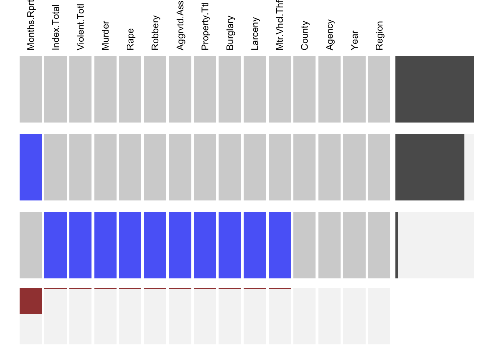
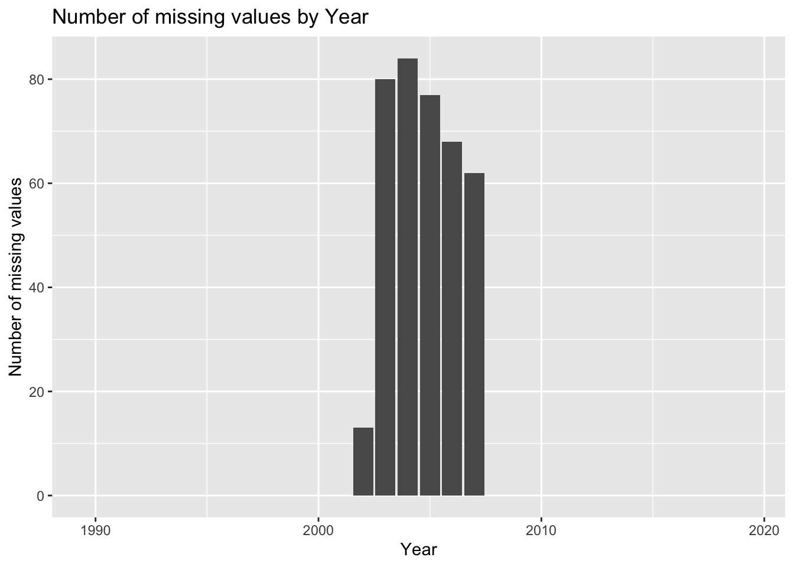

Chapter 5 Missing values
Our data is downloaded directly from New York State Government website. Since collected by the Division of Criminal Justice Services(DCJS) from more than 500 New York State police and sheriffs’ departments from 1990 to 2019, the data suffers from various missing situations. For example, the precise month of some reports may be unclear due to long time range, and data from some police station may be fully missing in some years. We try to analyze patterns of the missing values, and to fill gaps to get tidy data for downstream tasks.
First we can see the missing values in "Index_Crimes_by_County_and_Agency__Beginning_1990.csv" in Variable “Month.Reported” and other crime types:
## [1] TRUE## Months.Reported Index.Total Violent.Total Murder
## 9436 384 384 384
## Rape Robbery Aggravated.Assault Property.Total
## 384 384 384 384
## Burglary Larceny Motor.Vehicle.Theft County
## 384 384 384 0
## Agency Year Region
## 0 0 0Now we use Visna function to analyze patterns of the missing values:

In the Visna plot, missing values are categorized into two patterns. In majority cases, the months of reports are missing, while all crime reports would miss in minority cases, where we can only get information about the reported police station and year.
Next we explored the correlation between variables and missing types. The “months of reports” missing distributes quite uniformly with respect to all variables including year, county, agency and region. Since variable Months.Reports is not used in our data analysis part, we are more interested in the other missing type where all records are missing. After analyzing relations between the “all records” missing and other variables, we find that this kind of missing only occurs in 2002 to 2007, which means it’s highly correlated with virable year.

Finally, we use mean value of the county where “all records” missing happens in the same year to fill the second kind of missing values. Because the missing ratio of all records" is relatively small(about 1.5%) and the standard deviation of the same county in one year is also small, our filling process is making sense. Further, it’s very helpful for us to acquire tidy data for downstream data analysis. For the “months of reports” missing, we leave it in our tidy dataset since we don’t need this variable, and any filling to this missing is meaningless.
We saved our tidy data in “Tidydata_Crime.csv”. Next checking the missing values in the filled dataset.
## [1] FALSENow we can analize our preprocessed dataset “Tidydata_Crime.csv” with out missing values that may cause data gaps.